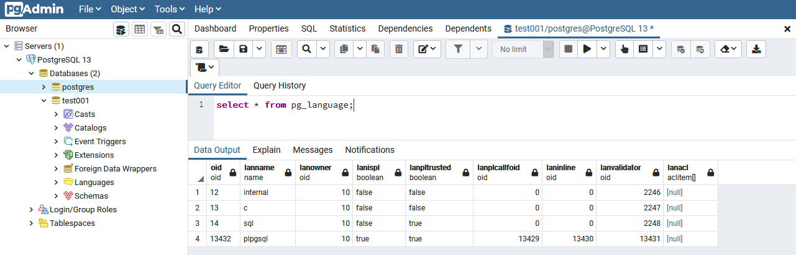
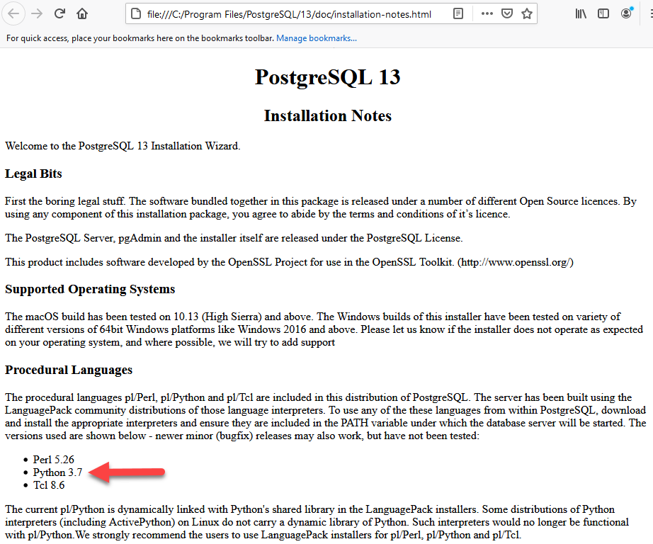
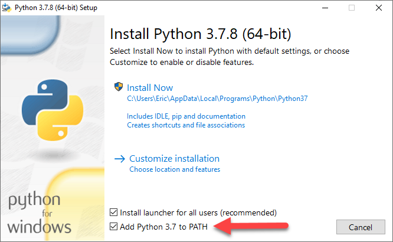
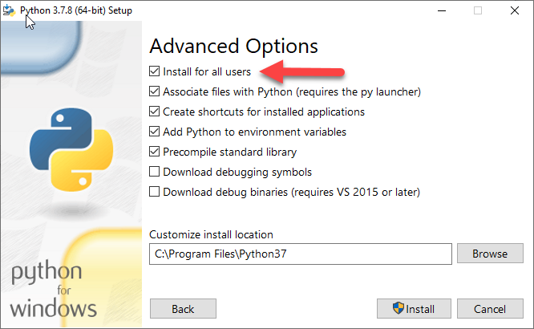
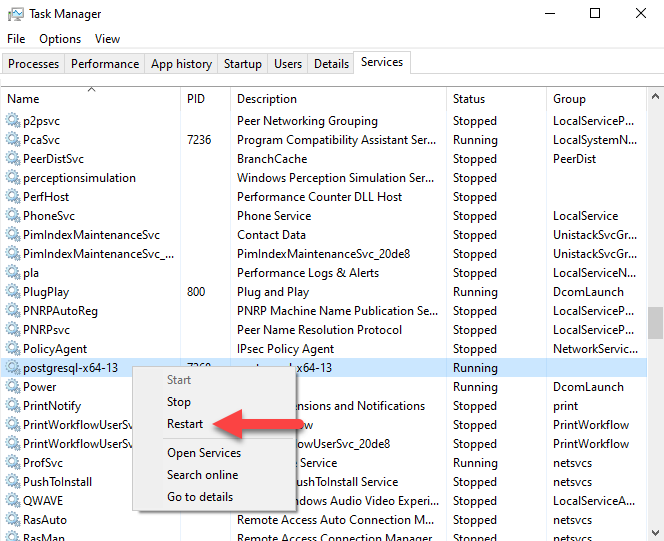
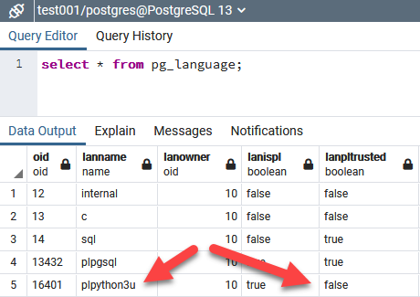

Python procedural language in PostgreSQL
 Author: Eric Lendvai
Author: Eric Lendvai
Table of Contents
- Target Audience
- Prerequisites
- Introduction
- Installation
- Examples of Stored Functions
- Examples of Stored Procedure
- Examples of Anonymous Code Block
- The plpy object
- The SD and GD global dictionary
- Reference Material
- Conclusion
Target Audience
Developers interested in developing and debugging PostgreSQL stored procedures, functions and triggers.
Prerequisites
- Basic understanding of SQL concepts and PostgreSQL servers.
- Setting up and configuring PostgreSQL servers.
- Basic knowledge of Python.
- Root access to a PostgreSQL server.
Introduction
As per: https://www.postgresql.org/docs/13/xplang.html
Please note that except for some minor installation differences this entire article is still valid as of PostgreSQL 18.
Any use of Python 2 are no longer supported.
Please note that except for some minor installation differences this entire article is still valid as of PostgreSQL 18.
Any use of Python 2 are no longer supported.
PostgreSQL
allows user-defined functions to be written in other languages besides
SQL and C. These other languages are generically called procedural
languages (PLs). For a function written in a procedural language, the
database server has no built-in knowledge about how to interpret the
function's source text. Instead, the task is passed to a special handler
that knows the details of the language.
PostgreSQL ships with four “official” procedural languages in the core distribution. These are maintained by the PostgreSQL project itself (not third-party add-ons):
PostgreSQL ships with four “official” procedural languages in the core distribution. These are maintained by the PostgreSQL project itself (not third-party add-ons):
PL/pgSQL
-The default procedural language.
-Syntax similar to Oracle’s PL/SQL.
-Trusted language (users can create PL/pgSQL functions without superuser).PL/Tcl
-Uses the Tcl scripting language.
-Comes in both trusted (pltcl) and untrusted (pltclu) variants.PL/Perl
-Uses the Perl language.
_Comes in both trusted (plperl) and untrusted (plperlu) variants.PL/Python
-Uses Python 3 (only).
-Available only as untrusted (plpython3u), so superuser rights are required.
It is also possible to create stored procedures, triggers and anonymous code blocks in Python.
One
of the main reasons to create stored functions and procedures is
performance. Data can remain on the server, and only results have to be
transferred to a local connection. But this could also create a
bottleneck, since all processing would occur on the server itself.
Debugging and version control can also be challenging.
In
this article, we are going to cover how to install support for Python
on the PostgreSQL server running on MS Windows and review some examples
of stored functions, procedures and anonymous code blocks. In the
reference section, you can also find a link for how to install on Linux.
Installation
The
following instructions are valid for a MS Windows PostgreSQL install
(tested on Windows 10 Pro) and will also require the use of pgAdmin.
- Create a new database, for example "test001"
- For that database, open a "Query Tool" tab and run the following:
"select * from pg_language;"
unless you already see Python listed, do the following steps: - Locate and open (with a web browser) the file installation-notes.html in the "doc" folder wherever python is installed.
On Windows 10, the PostgreSQL install defaults to the "C:\Program Files\PostgreSQL\13" folder. - In the in installation-notes.html, locate the version of Python that is compatible with your version of PostgreSQL. For PostgreSQL 13, we will need to install Python 3.7.

- For MS Windows, download the 64 bit version of Python 3.7:
https://www.python.org/downloads/windows/
As of March 25, 2021: https://www.python.org/ftp/python/3.7.8/python-3.7.8-amd64.exe - Install
Python but use the "Add Python 3.7 to PATH" ! Otherwise, you will have
to start PostgreSQL not as a service and wrap the path in a batch file
that will launch PostgreSQL.

To avoid access issues, use the "Install for all users" option, since PostgreSQL will run as a service.
- Restart the postgresql-x64-13 Windows Service, or simply reboot first.

- To back to pgAdmin, open the database you would like to add Python support to and run: "create extension plpython3u;"
- Re-run for the "test001" database "select * from pg_language;" to confirm Python is available.

Only plpgsql is a "trusted" language, meaning no code can be created to get root access to the PostgreSQL machine itself. The "u" in plpython3u, stands for "untrusted." - Run "create extension plpython3u;" for any database you would like to create procedures in Python.
When
you create Python code, the PL/Python language module automatically
imports a Python module called plpy. The functions and constants in this
module are available to you in the Python code as plpy.foo.
Examples of Stored Functions
Using pgAdmin, open a "Query Tool" tab and run all the following examples:
To Add/Update a stored function GetPythonVersion:
CREATE OR REPLACE FUNCTION GetPythonVersion() RETURNS textAS $$import sysreturn sys.version$$ LANGUAGE plpython3u;
To test run the following:
DO $$DECLARE v_cVersion Text;BEGIN SELECT GetPythonVersion() INTO v_cVersion; RAISE NOTICE 'Python Version = %',v_cVersion;END; $$
To Add/Update a stored function pythonmax:
CREATE OR REPLACE FUNCTION pythonmax (a integer, b integer) RETURNS integerAS $$ if (a is None) or (b is None): return None if a > b: return a return b$$ LANGUAGE plpython3u;
To test run the following:
DO $$DECLARE v_iMaxValue integer;BEGIN SELECT pythonmax(2,5) INTO v_iMaxValue; RAISE NOTICE 'Python Max of 2 and 5 is %',v_iMaxValue;END; $$
Let's create a function to UDP send a message.
Run the following to Add/Update the stored function SendMessage(...):
Run the following to Add/Update the stored function SendMessage(...):
CREATE OR REPLACE FUNCTION SendMessage (par_message text) RETURNS textAS $$ import socket sock = socket.socket(socket.AF_INET, socket.SOCK_DGRAM) address = ('127.0.0.1', 49152) sock.sendto(bytes(par_message, 'utf-8'), address) sock.close() return par_message$$ LANGUAGE plpython3u;
To call it:
SELECT SendMessage('hello');
Or use the following anonymous code block:
DO $$BEGIN PERFORM SendMessage('hello');END; $$
The following is a plain program to view the message transmitted from the PostgreSQL server:
| File: ListenToUDPMessages.py: |
import socketfrom datetime import datetimedef main(): UDP_IP = "127.0.0.1" UDP_PORT = 49152 nCounter = 0 sock = socket.socket(socket.AF_INET, # Internet socket.SOCK_DGRAM) # UDP sock.bind((UDP_IP, UDP_PORT)) while True: try: nCounter += 1 data, addr = sock.recvfrom(1024*1024) # buffer size is 1Mb dt = datetime.now() print("{0:05d}|{1}|{2}".format(nCounter,dt,data.decode("utf-8")) ) except: print("Overflow")if __name__ == "__main__": main()
Examples of Stored Procedure
The following is an example of a stored function in Python, also using the plpy object.
Let's first create a table in the test001 database. In pgAdmin, run the following:
Let's first create a table in the test001 database. In pgAdmin, run the following:
CREATE TABLE product( pk integer NOT NULL GENERATED ALWAYS AS IDENTITY ( INCREMENT 1 START 1), name text, CONSTRAINT product_pkey PRIMARY KEY (pk))
To add and test the stored procedure AddManyProducts:
CREATE OR REPLACE PROCEDURE AddManyProducts()LANGUAGE plpython3uAS $$for i in range(1, 11): plpy.execute("INSERT INTO product (name) VALUES ('Thing {}')".format(i))$$;CALL AddManyProducts();
Examples of Anonymous Code Block
Ensure you have the ListenToUDPMessages.py running first.
DO $$ # PL/Python code from datetime import datetime cCurrentTime = datetime.now().strftime("%H:%M:%S") plpy.execute("INSERT INTO product (name) VALUES ('Thing {}')".format(cCurrentTime)) plpy.execute("SELECT SendMessage('Added a record in product table at {}')".format(cCurrentTime))$$ LANGUAGE plpython3u;
The plpy object
Any
Python that runs on the PostgreSQL server will have access to a plpy
object. The following is a list of possible methods and properties:
plpy.execute(query [, max-rows])
plpy.prepare(query [, argtypes])
plpy.execute(plan [, arguments [, max-rows]])
plpy.cursor(query)
plpy.cursor(plan [, arguments])
plpy.commit()
plpy.rollback()
plpy.SPIError # Trapping Errors
plpy.prepare(query [, argtypes])
plpy.execute(plan [, arguments [, max-rows]])
plpy.cursor(query)
plpy.cursor(plan [, arguments])
plpy.commit()
plpy.rollback()
plpy.SPIError # Trapping Errors
plpy.log(msg, **kwargs)
plpy.info(msg, **kwargs)
plpy.notice(msg, **kwargs)
plpy.warning(msg, **kwargs)
plpy.error(msg, **kwargs)
plpy.fatal(msg, **kwargs)
plpy.error and plpy.fatal
plpy.info(msg, **kwargs)
plpy.notice(msg, **kwargs)
plpy.warning(msg, **kwargs)
plpy.error(msg, **kwargs)
plpy.fatal(msg, **kwargs)
plpy.error and plpy.fatal
The SD and GD global dictionary
The
global dictionary SD is available to store private data between
repeated calls to the same function. The global dictionary GD is public
data that is available to all Python functions within a session; use it
with care.
Example for using the SD dictionary in a Python stored function:
CREATE OR REPLACE FUNCTION my_counting_function() RETURNS integer AS $$ if 'counter' not in SD: SD['counter'] = 0 SD['counter'] += 1 return SD['counter']$$ LANGUAGE plpython3u;
Reference Material
The best source of information is the official PostgreSQL documentation:
For Linux install: https://dev.nextthought.com/blog/2018/09/getting-started-with-pgsql-plpythonu.html
(Not a verified set of instructions)
Conclusion
Even
though the native PostgreSQL procedural language is very powerful and
quite fast, having the option to use Python code will open the list of
features you can implement on your server. Being able to import
virtually any Python packages will give you lots of features, but
remember to be careful with security-related issues.
The browser did not close this tab. It may have been opened directly instead of from the Articles list. Use Back to Articles.